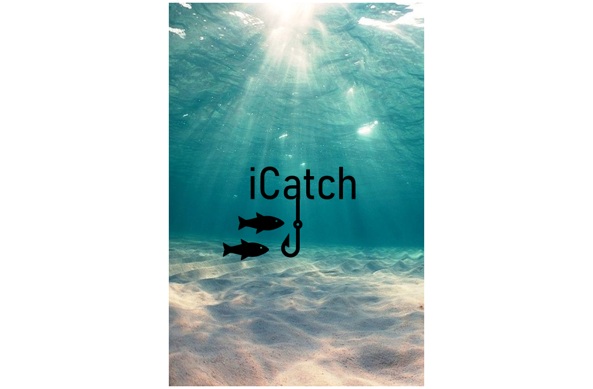
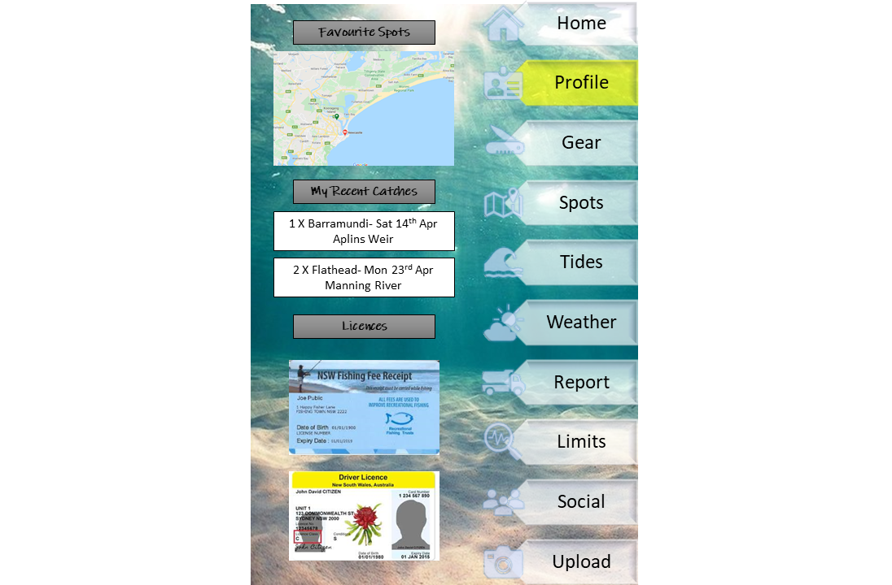
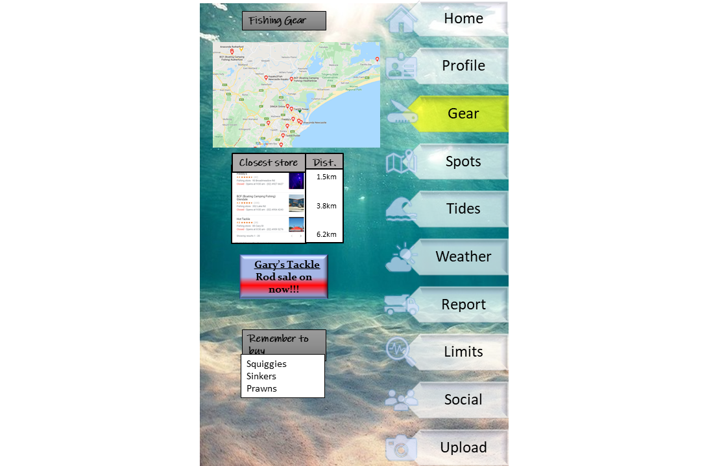
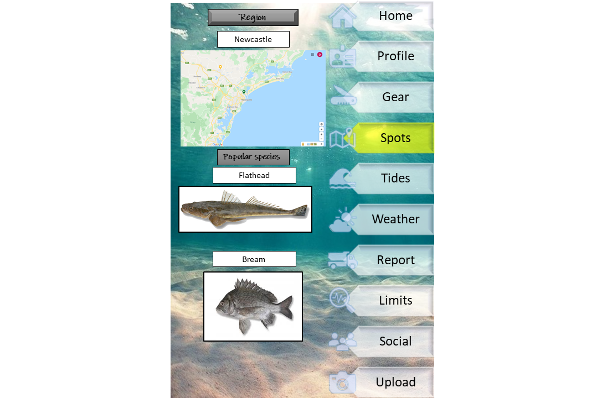
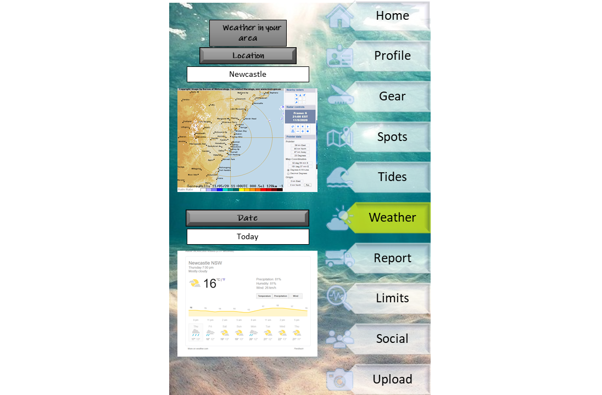
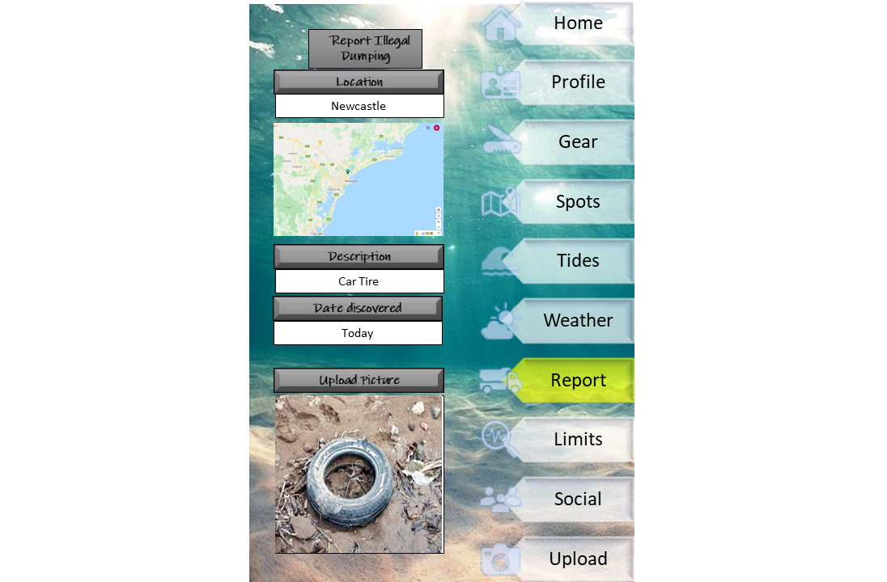
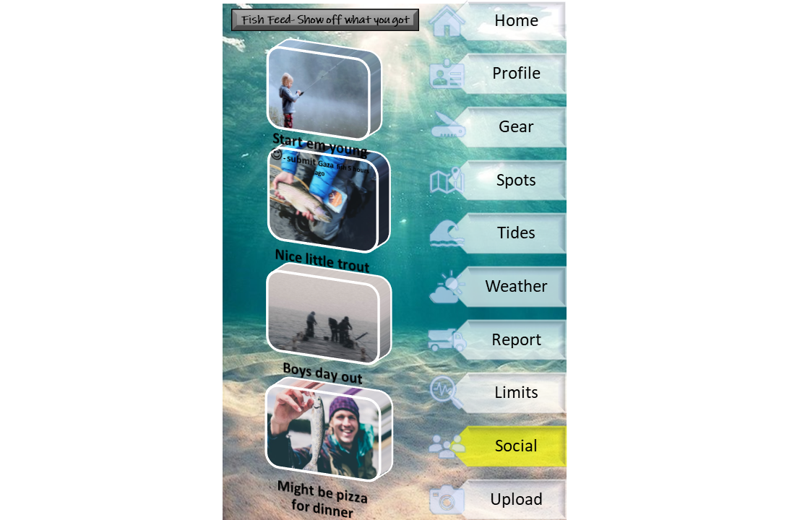

With 5 million recreational fishers in Australia, the sport of fishing remains relatively untouched when it comes to IT, specifically smart phone apps. The purpose of this project is to create a mobile based fishing app targeted at recreational fishermen for both IOS and Android systems and will be limited to Australian states and territories. The app will drive a social atmosphere and will include the ability to share photos and chat about fishing.
The aim of the app is to increase the popularity of recreational fishing in Australia, make recreational fishing more socially oriented and, through sustainability and waste recovery, support the health of Australian waterways to ensure recreational fishing is kept alive well into the Australia’s future.
While also incorporating data from weather and tidal apps, the app will also be driven by data uploaded by recreational fishers in regards to what types of fish are caught in different locations, the best tide times when the fish have been caught and even recommended bait or tackle configurations.
There are 3 main motivations behind the project in bringing technology to the sport of fishing. The first of which is to make the sport become more socially focused, by linking various social media platforms to the app. The second is to increase fishing as a popular pastime by making successful fishing spots, methods, gear and times more established, especially beneficial in getting recreational fishers to take up the sport. The third reason for the push for technology is to collect and make data from the app available to assorted Australian agencies for the purpose of stocking of fish in certain areas based on the popularity, to the CSIRO (Commonwealth Scientific and Industrial Research Organisation) in order to gain an insight into fish populations and migrations over a long period of time, and to local governments for the purpose of the recovery of waste such as chemical drums, car tires and whitegoods from Australia’s water ways.
The current IT trends include the increase of mobile technology and the popularity of social media in the day-to-day lives of Australians. Technology is especially relevant to the sport of recreational fishing where people need to: use maps to search for fishing spots, google where to purchase bait and fishing equipment, purchase a fishing license depending on which state they live in, check to see what the weather and tides are like, look for tips on how to catch certain species of fish, and many other reasons.
To work on this project would show to a future employer that we as individuals are able to both undertake individual research on a set topic and also work together as a group to compile a report while having an understanding of relevant IT software and methods.
There are numerous stand-alone apps on the market for fishing related activities including: Social media, tides, weather, maps, lunar calendars, fish identification, fishing knots and many others.
There are about 10 competitors in the market, the most popular of which, Fishbrain (Fishbrain n.d.) has over 5 million users worldwide. With the most popular Australian apps having about 100,000 free and 10,000 subscribed users.
The main competitors for the app would be Fishbrain and Australian based apps: “Fishing points- Fishing app” (Fishing Points 2020) and “Fishing spots” (Fish Angler n.d.). These apps all feature similar functions such as: a map indicating where fish have been caught, a social media feed, a weather forecast, the ability to upload a catch, a fish species database and a virtual tacklebox.
This app differs from the current apps due to the environmental and sustainable elements that no other apps currently offer, with the ability to report dumping and providing data to government agencies for sustainability. Additionally, what will set the app apart is ease of use, functionality and ability to link seamlessly with a wide range of social media platforms. The app will also be able to digitally hold current state drivers’ licences, fishing licences and marine licences and will also show the closest fishing tackle/ bait suppliers and operating hours something that the other apps don’t do.
At its most basic level, iCatch is a smartphone app that will assist recreational and licenced fishermen in a number of ways. The application will take an accessible and easily manageable form and allow users to; mark fishing spots by location and store relevant data, connect with friends and fishing professionals, and suggest new locations for users based on collected data and the users’ chosen fishing method. Additionally, the app will include the ability for recreational fishers to report illegal dumping such as car tires and white goods so often seen in water ways during fishing.
The ability to mark specific locations via GPS and collate masses of information will be the main feature that the app is then built around. The information amassed will be made accessible to the consumer in a well presented and user-friendly manner. This information will be gathered automatically by the program from various websites and data agencies. The data that will be collected by the program will not be limited in the future. However initial data types will include; the location of fish where they are caught, the tide (and its size), water temperature, currents, time of day and weather conditions. Data that cannot be collected automatically will require user inputs and will incorporate such entries as; the type (and size) of fish, the tackle used, how accessible the location is, water depth, as well as the depth where the fish was caught. Other data supported by the app will be things such as dates and pictures.
Rather than simply storing the data, this program will then feed it back to the user based on specified filters or smart suggestions. This could work two ways; firstly, by allowing the user to search for a specific fish. This will return various locations within a certain radius (specified by the user) where these fish have been caught in volumes. Preferred bait, optimal tides (when they feed in the cycle, incoming or outgoing, etc.) and most successful tackle will all be returned to the user to give them the best chance of catching their target fish. Secondly, a user could instead choose to enter a location, rather than a target fish. This would then return what fish are likely to be caught at that spot and the equipment then needed. This will be done all while taking into account the weather, time of day, and the season.
Another feature that excites the team and distinguishes our program is the addition of a social aspect. This would allow users to follow friends or public figures allowing them to share locations, catches and discuss information with each-other (Facebook 2020). This would also allow existing fishing charters to charge subscription fees for information such as fishing spots and tips through our application.
An additional feature proposed by the team aims to set a sturdy foundation in social responsibility. Within one year from launch the team aims to give the app the ability to supply captured data to the Department of Primary Industries and the CSIRO for fish migration data and Australian state agencies for the purpose of fish stocking programs.
The application will rely heavily on GPS and data storage technologies upon launch. While these features have become relatively easy to create and manage in recent times, it is imperative that the team follows a strict plan for protecting this data. For it plays such an essential role not only in the effectiveness of our program, but in whether or not people are comfortable with the brand. This will mean that prior to the launch of the app, the team must have enlisted the service of a skilled developer with refined expertise in web and data security to ensure the app is manageable and secure at the time of launch.
The programs greatest feature will undoubtedly be its ability to, rather than just store information, feed it back to the user based on specified filters or “smart suggestions” using aspects of machine learning. We expect machine learning to be the most challenging aspect of developing the program. In saying that however, we understand that our app, like others, will never be “complete” and it certainly won’t contain an advanced AI system at launch. It is our intention to continue to grow our capabilities as developers as the application grows in complexity. This ultimately serves as our plan to build an extremely accessible, data orientated app.
The application began as a single idea and was soon adopted and expanded on heavily by the team. In a rapidly expanding world of information systems it was noticed that there was only few aspects of modern life that weren’t already consumed by technology. Although the team is passionate about fishing, it was the amount of people who enjoy recreational fishing, and the lack of great competition in this market that lead the group to really pursue the program.
At present, iCatch is still in its design stage (see artefact at end). The team will aim to launch the app with minimal basic features and grow exponentially, adding the rest in time with a larger budget and a larger team of developers. While these features are fundamental and important to iCatch, they are only initial features and it is unknown what possibilities will be made available and what ideas will be had in the future.
Initially the app will be built for IOS and Android devices. This means there are a number of necessary tools and technologies required to build and accommodate the program in the future. The software required to build the IOS app includes the Apple Xcode toolkit (Apple Developers 2020). For the Android app, programs such as Android Studio or Eclipse are needed (Android Developers 2020). Instead of utilising two programming platforms the team will instead make use of Xamarin, which will automise the interface between the two operating systems and the required code for each (Microsoft 2020). The data collected by the app will be centralised as we aim make the most of cloud computing, limiting requirements on the consumer end. The hardware requirements on our end consist of, as a minimum, a device capable of comfortably running software development kits.
The skills required by the team to build and maintain the application as a whole are great competence in both Swift and Java programming languages. Furthermore, strong skills with various aspects of cloud computing are also necessary. More specifically, database skills and developmental operations proficiency.
It is crucial that the team gains these necessary skills and invests in the required tools. It is also acknowledged that more developers will also be needed in the future to cope with growth, and to also provide even more ideas.
Roles for the app’s development have been loosely assigned and are based around the potential hierarchy of a project. The roles have been assigned based on the aspirations and skills of the team members but are not fixed, nor do they wholly define the roles and jobs undertaken by each team member. The roles are as follows:
Damian has been selected as the Project Manager. It is a role he naturally fills, instinctively developing structure, initiating brainstorming, and taking ownership over setting and meeting goals. Adam is the logical choice for Lead Developer as it is an evolved version of his initial project and maintains much of the original function and aim from that first concept. Pair this with his aim to be a software engineer for the Renault Formula 1 team and the position of Lead Developer for the project is an admirable position to fulfil and something he can add to his portfolio. Content, Marketing and Finance falls to Andrew Fraser, as he is completing his Bachelor of Business - Logistics and Supply Chain Management he has completed two finance units and one marketing unit. Although in the long run these two functions may be outsourced or conducted by new hires, his knowledge in these areas will give the project a running start. His primary responsibilities, outside of coding and development, will be seeking commercial partnerships and forming key strategic relationships. Shane Gillespie and Jack Wilson will take on Developer roles, primarily involved with creation of the app under the direction of the Lead Developer. This includes involvement with creating applications and functions processes, improvements, maintenance and programming, as do all the other roles.
The objective of this project is to create a fishing app with the capability for users to identify ideal fishing spots through the input of other users who have created a sort of tag at the location which marks the location with some input data through set filtered fields. The scope for the project has been defined as creating the user interface, the interface with Open Street Maps, the updated maps, the user chat, the contact interface between Service Provider and user, the reporting function for the social responsibilities aspect, and the “report a problem” function between users and developers.
To avoid “scope creep” it is important to also define what aspects of the application will not be within the scope for development. The map will not be created; Open Street Map is an open license platform available for all developers and is an evolving map of the world (OpenStreetMap 2020). Already a lot of mobile applications offer the ability to link google, Facebook or other social media accounts to the applications user account. This can be offered through the Facebooks free Official SDK (Facebook 2020) and as such this function is not within the scope for development. Information filters will be used in the application, the development team will use something similar to a drop down search api (OpenAsApp 2020) which is available to all developers.
Typically apps for different operating systems require different programming languages. In most circumstances those languages are Java or Kotlin for Android (Android 2020) and Swift and Objective C for iOS (Apple 2020). As none of the group members are particularly skilled or experienced with any programming languages, it is in the best interests of the project to adopt lean principles for the human resources and maximise efficiency of effort. As such the project will adopt the source code app user interface Xamarin.FORMS, which allows users to create applications for both Android and iOS using C# as the programming language (Microsoft 2020) (G2 2020), and bridges gaps using the platforms existing protocols. Pricing for an enterprise is $1,899 USD for one year’s license (G2 2020).
Additionally there will be a number of .api’s required for such app functions as filters, etc. although these will likely be recruited from open source code to reduce the amount of original content creation required and thereby limit the required input resources. If licenses are required for access to source libraries this will be assessed on a case-by-case basis through a needs analysis.
Testing is a critical component in app creation to ensure that the logic and the process flows translate correctly to the manifested app. Each function should be tested on an Android and iOS platform to guarantee that users can immediately enjoy the full use of the app upon release without conflicts or errors. However with limited resources and limited time, user testing after each additional function to determine the impact on all existing applications is a very time-consuming process. Therefore testing will be conducted for new functions as the app is developed through a process of “builds”, beginning with v0.1.
User testers will be selected from the project team as well as an additional 2-5 testers from outside of the project team. The testers will be selected on the basis of development knowledge and experience, along with the type of mobile device the tester owns. For the maximum exposure as broad a spread as possible of popular brands should be covered, including brands such as Samsung, Apple, Huawei, Nokia, Sony, Google and OnePlus. A higher level of app or programming expertise to thoroughly assist with useful feedback. Fishing interest is a minor factor as content creation is the responsibility of the project team and the scope and available resources do not allow for further function or content to be developed prior to release. Post-release, depending on how well the app functions, feedback and interest, further development can be considered, further resources assigned and the testing program expanded accordingly.
iCatch will be tested with three “test builds” and one “release build”. With each test build releasing more functionality and rectifying issues detected in the previous round of testing. As such the testers and developers should be prepared for three rounds of testing prior to the initial release at the end of the 16 week project.
The project has been in progress for nearly 6 weeks by the publishing of this report and progress has been solid. In the early weeks the team was given easily achievable goals, whereby the individual members could reset from the build-up of stress from assignment 2. During this time the main focus was on the app layout and mock-ups were produced by Damian, with review and feedback from the other group members. Weeks 4-6 heavily focused on the presentation script, presentation filming and making decent strides into the report progress.
Weeks 7-16 of the project timeline will be heavily focused towards app development; programming, testing builds, and creating the sought-after commercial partners. An abbreviated timeline can be seen below:
| Week | Damian | Adam | Andrew | Jack |
|---|---|---|---|---|
| 1 | Topic. Create app layout and create demonstration for presentation. | Create plan and detail progress. App layout brainstorming. | Define roles. App layout brainstorming. | Analyse career plans. App layout brainstorming. |
| 2 | Motivation. Create app layout and create demonstration for presentation. | Create plan and detail progress. App layout brainstorming. | Define scope and limits. App layout brainstorming. | Analyse career plans. App layout brainstorming. |
| 3 | Landscape. Create app layout and create demonstration for presentation. | Create plan and detail progress. App layout brainstorming. | List tools and technologies and set time-frame. App layout brainstorming. | Analyse career plans. App layout brainstorming. |
| 4 | Assist to create and review script. Finalise app layout and create demonstration for presentation. | Create plan and detail progress. Assist to create and review script. | Determine testing protocols and detail group processes and communication. Assist to create and review script. | Assist to create and review script. Analyse career plans. |
| 5 | Revise and finalise script and storyboard. Film presentation. | Create plan and detail progress. Film presentation. | Detail Risk. Film presentation. | Analyse career plans. |
| 6 | Complete reflection. Finalise editing of presentation video and submit. | Complete reflection. Create plan and detail progress. List skills and jobs. | Complete reflection. Finalise report and website and submit. | Complete reflection. Detailed Description - Aims |
| 7 | Assist market analysis. Manage timeline and goals. Development. | Content brainstorming. App program and development. Liaise with PM and Marketing and content. | Begin market analysis and identify potential strategic partners. Book-keeping. Create Budget Control Report. | Development of application |
| 8 | Review market analysis. Manage timeline and goals. Development. | Content brainstorming. App program and development. Liaise with PM and Marketing and content. | Complete market analysis and approach potential partners. Book-keeping. Update, review and report on Budget Control Report. | Development of application |
| 9 | Assist partner negotiation. Manage timeline and goals. Development. | Content brainstorming. App program and development. Liaise with PM and Marketing and content. | Continue negotiation with potential partners. Book-keeping. Update, review and report on Budget Control Report | Development of application. Finalise sections for testing. |
| 10 | Manage timeline and goals. Development. | Manage testing program. Review feedback and set corrective actions. | Select viable partners. Book-keeping. Update, review and report on Budget Control Report. | Development of application. Update application from testing feedback. |
| 11 | Manage customer relationships. Manage timeline and goals. Development. | Manage testing program. Review feedback and set corrective actions. | Manage customer relationships. Content brainstorm and testing. Book-keeping. Update, review and report on Budget Control Report. | Development of application. Release follow-up test build. |
| 12 | Manage customer relationships. Manage timeline and goals. Development. Testing | Manage testing program. Review feedback and set corrective actions. | Manage customer relationships. Content brainstorm and testing. Book-keeping. Update, review and report on Budget Control Report. | Development of application. Update application from testing feedback. |
| 13 | Manage investors and prepare for release. Manage timeline and goals. Development. | Manage testing program. Review feedback and set corrective actions. | Manage customer relationships. Content brainstorm and testing. Book-keeping. Update, review and report on Budget Control Report. | Development of application. Release test build with further functionality. |
| 14 | Manage investors and prepare for release. Manage timeline and goals. Development. | Manage testing program. Review feedback and set corrective actions. | Manage customer relationships. Content brainstorm and testing. Book-keeping. Update, review and report on Budget Control Report. | Development of application. Update application from testing feedback. |
| 15 | Manage investors and prepare for release. Manage timeline and goals. Development. | Manage testing program. Review feedback and set corrective actions. Preparation for production release. | Manage customer relationships. Content brainstorm and testing. Book-keeping. Update, review and report on Budget Control Report. | Development of application. Release final test build with full functionality. |
| 16 | Manage investors and prepare for release. Manage timeline and goals. | Manage testing program. Review feedback and set corrective actions. Preparation for production release. | Manage customer relationships. Content brainstorm and testing. Book-keeping. Update, review and report on Budget Control Report. | Troubleshooting and maintenance of application. |
The project objectives are at the far end of ambitious, to the point they project can absorb very few delays to maintain the project timeline. Within this time the Xamarin.FORMS platform must be secured, the application programmed using a programming language none of the project members have experience with, use of a few unfamiliar .api’s to facilitate projected functions, and the integration with Open Street Maps created in addition to forming strategic partnerships with service providers in the industry.
Difficulties in licensing the necessary source code interface, learning the programming language, failures of the source code to provide the expected benefit or delays in securing strategic partnerships can all result in delays of the deliverables and potential delays to the overall project. A delay in the project may result in a loss in investor confidence, or a loss in the consumer interest, in addition to the potential to higher with overheads costs and jeopardise the budget.
Recruiting the appropriate testers may be a risk. There are little resources to incentivise testers and therefore engendering sufficient buy-in from the ideal testers may be problematic. At worst case this may also create a delay in the project delivery, or result in unexpected errors after app launch resulting from conflicts which should have been detected and rectified during the testing. This may impact the reputation and therefore the overall success of the project.
Group communication was solid through assignment 2 although, as always, with some room for improvement. Microsoft Teams group chat is the main communication platform as it is the most versatile. Teams can be operated as a web or mobile app and is designed as a commercial work platform and therefore allows file storage, meeting planning, and voice and video meetings and conferences. Zoom was also used for the rehearsal and recording of the group presentation, although these sessions were scheduled using Teams. The presentation would have also been conducted through Teams, however Zooms in-built recording functionality made the need for an additional recording program, such as OBS, redundant.
No formal meetings were scheduled, outside of the presentation rehearsals and recording, due to time-zone differences and availabilities of the individual group members. Collaboration and brainstorming was conducted more informally through Teams group chat.
Allocation of work was divided on a voluntarily basis, assuming correctly that individual responsibility would encourage members to volunteer for sections with a relatively fair division. To a surprising degree this method was successful, although some group members did take on a greater workload, dividing up outstanding sections among the more organised group members. Work allocation was divided and recorded using a Gantt chart in excel, with an approximate workload and duration included to assist in a fair division. The Gantt chart can be observed below.
In addition Github was used a lot more for file and version storage by the group after recommendation in the feedback from Assignment 2. A new repository for Assignment 3 was created and all shared files were stored in Github. However, one member working on location had his personal laptop destroyed when a tree fell through the house in a storm on the weekend Assignment 2 was due. As such all shared files were also stored on Teams to ensure all members had easy access, although this required discipline in communication to ensure the integrity of version control was maintained.







Android Developers 2020, Develop Android Apps with Kotlin, Google LLC, viewed 25th May 2020, <https://developer.android.com/kotlin>
Apple Developers 2020, Swift, Apple Inc., viewed 25th May 2020, <https://developer.apple.com/swift/>
Australian Bureau of Statistics 2003, Year Book Australia- Recreational fishing, ABS, Canberra, viewed 18 April 2020, <https://www.abs.gov.au/AUSSTATS/abs@.nsf/Previousproducts/BAFB91C589D0706FCA256CAE0015CAA9>
Bedell, C 2013, Mobile apps development: Defining requirements is a whole new ballgame, TechTarget, 25 February, viewed 20 April 2020, <https://searchsoftwarequality.techtarget.com/ feature/Mobile-apps-development-Defining-requirements-is-a-whole-new-ballgame>
Emani, KK 2019, The Top Cloud Computing Skills You Need to Pick Up This Year, Simplilearn Solutions, 24 December, viewed 20 April 2020, <http://simplilearn.com/top-cloud-computing-skills-article>
Facebook 2020, API’s and SDK’s, Facebook, Inc., viewed 25th May 2020, <https://developers.facebook.com/docs/apis-and-sdks/>
G2 2020, Xamarin.FORMS, G2.com Inc, viewed 18th May 2020, <https://www.g2.com/products/xamarin/pricing>
JobHero, (n.d.), QA Tester Job Description, JobHero, viewed 25 May 2020, <https://www.jobhero.com/qa-tester-job-description/>
Microsoft 2020, Xamarin, Microsoft, viewed 18th May 2020, <https://dotnet.microsoft.com/apps/xamarin>
OpenAsApp 2020, Searchable Drop-Down List, OpenAsApp, viewed 25th May 2020, <https://support.openasapp.com/hc/en-us/articles/360006908320-Searchable-drop-down-list->
OpenStreetMap 2020, About, OpenStreetMap Foundation, viewed 25th May 2020, <https://www.openstreetmap.org/about>
Puolitaipale, T 2019, How to Find the Perfect Team for Mobile Application Development, Atimi, viewed 25 May 2020, <https://www.atimi.com/the-roles-of-a-mobile-application-development-team/>
Tonex Training 2019, Mobile Applications Business Analysis | Development Requirements, Tonex Inc., viewed 25 May 2020, <https://www.tonex.com/training-courses/mobile-applications-business-analysis/>
V, N & Z, A 2019, What’s the Best Tech Stack for Mobile App Development?, RubyGarage, 6 January, viewed 20 April 2020, <https://rubygarage.org/blog/technology-stack-for-mobile-development>